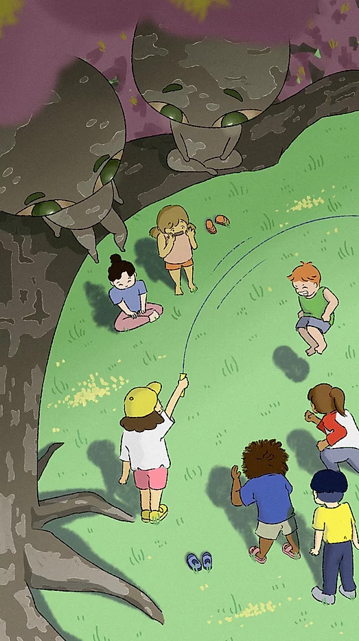
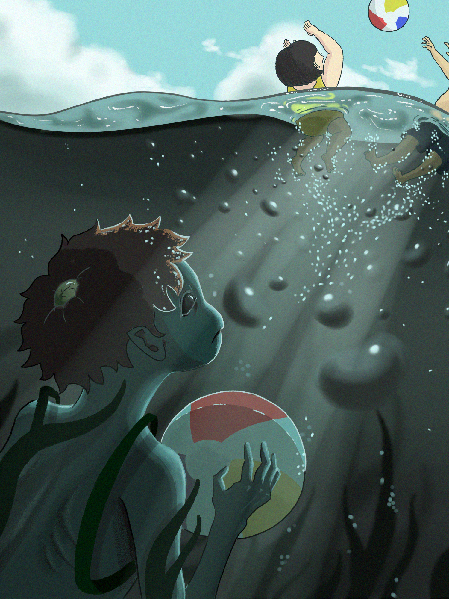
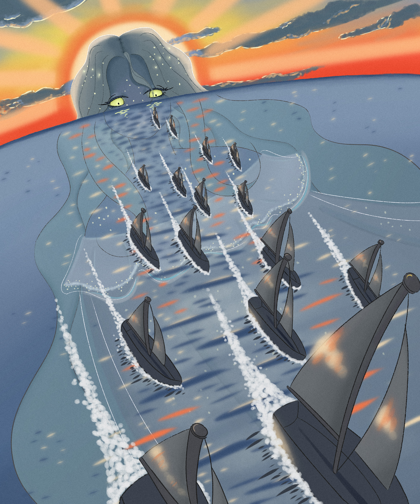
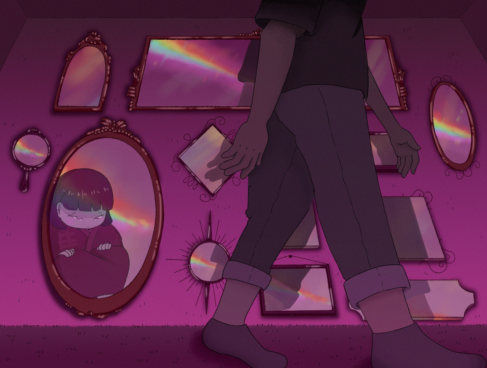
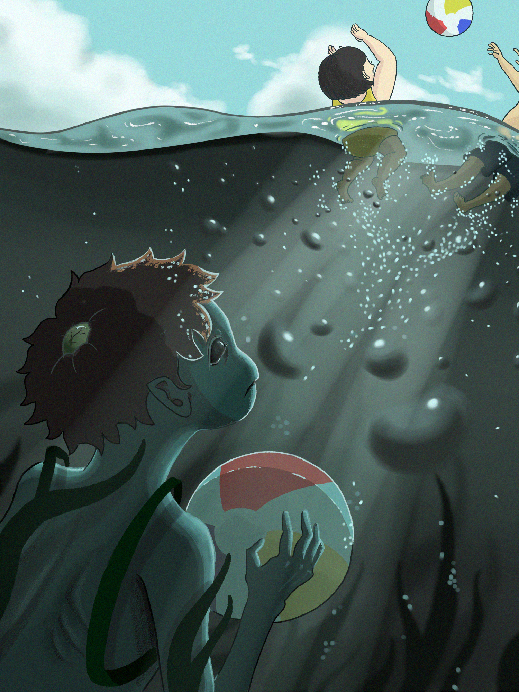
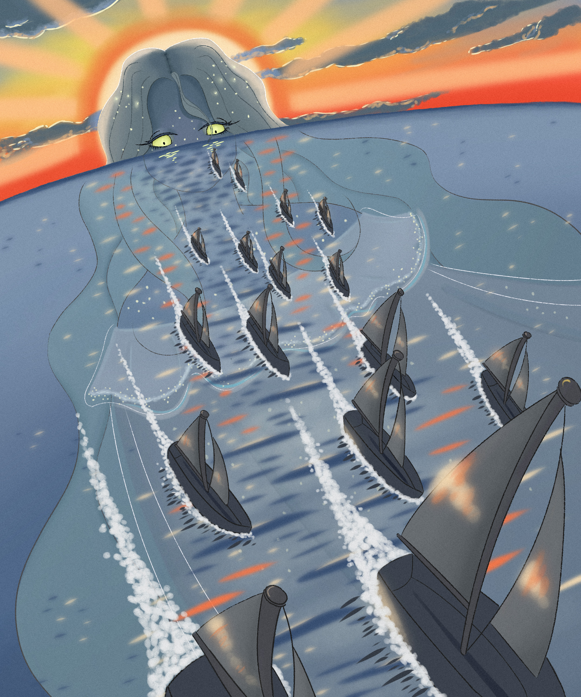
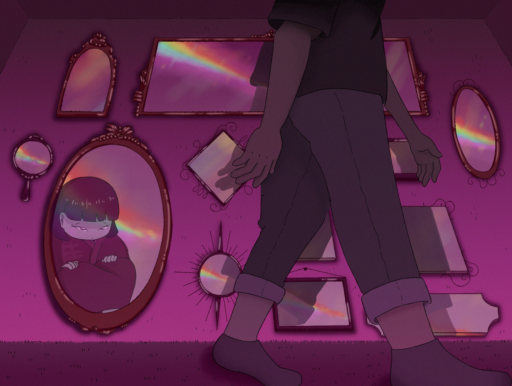
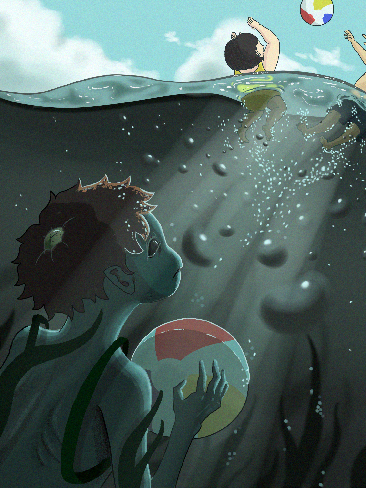
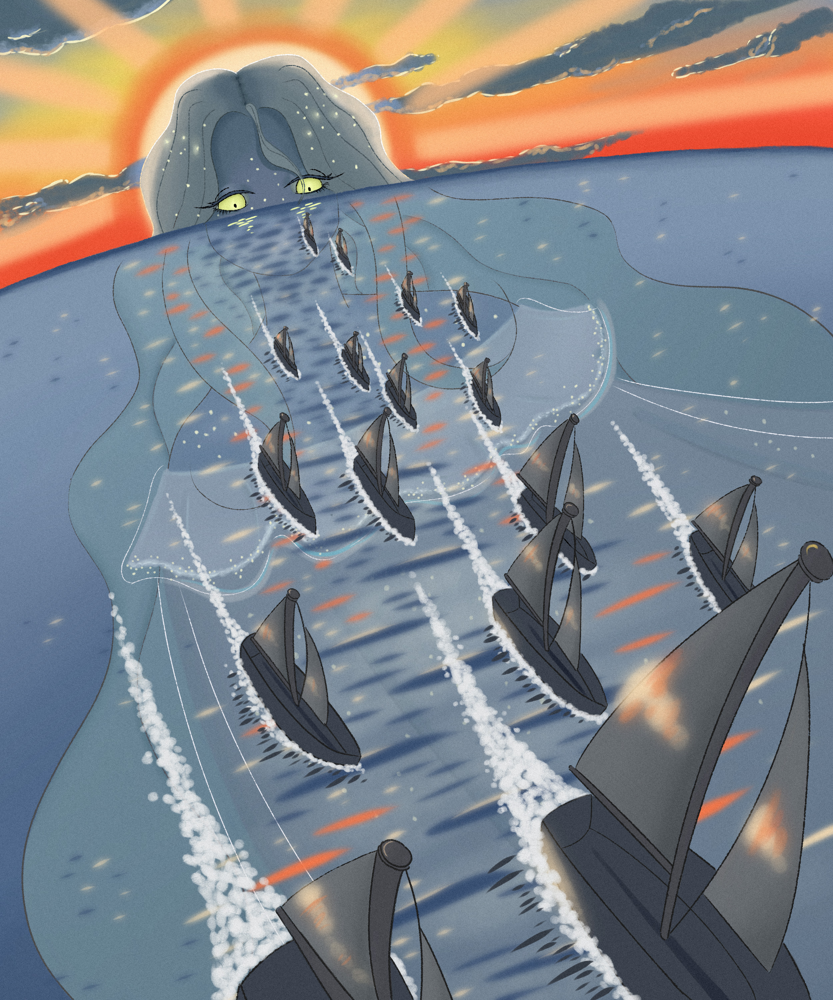
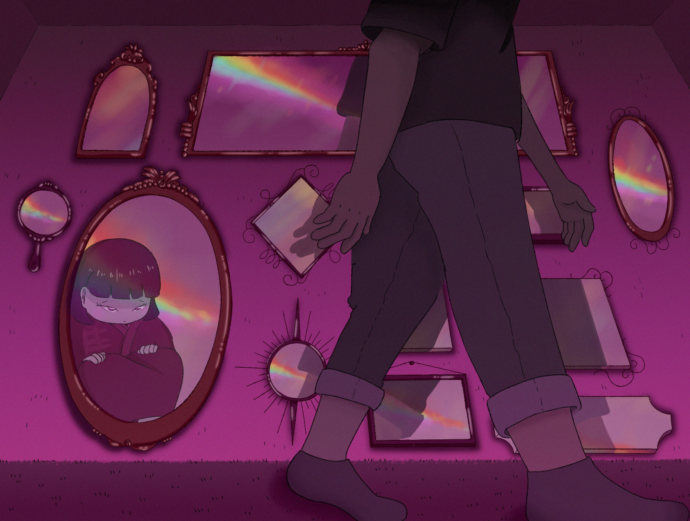

妖怪 (yokai) series
a series of work based on my experience growing up in an environment that deemed my japanese culture too foreign.
featuring yokais (japanese mythological creatures) that can never fully integrate into society, it explores the delicate balance between assimilation and cultural preservation.

 







